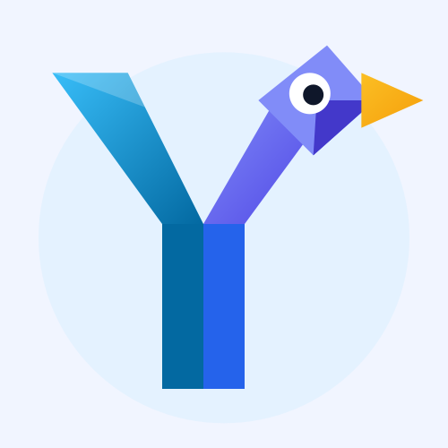
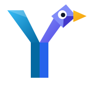

Isotipo Oficial: Yeivily (Yeib)
Fusión geométrica de la "Y" de Yeib con el pato de DuckDuckGo.
yeivily
El brazo izquierdo forma el ala/cola, el poste vertical forma el tronco sólido de la Y, y el brazo derecho remata en la cabeza del pato con su pico ámbar.
Avatar (500x500)
Para GitHub & Glama

Favicon (180x180)
Apple Touch Icon

Favicon (32x32)
Pestaña de Navegador
Vector Puro (SVG)
Carga en 0.01s en tu web
Snippet listo para insertar en el <head> de tu sitio web:
<!-- Yeivily Favicon & Icons --> <link rel="icon" type="image/svg+xml" href="/assets/logos/yeivily-icon.svg"> <link rel="icon" type="image/png" sizes="32x32" href="/assets/logos/yeivily-favicon-32.png"> <link rel="apple-touch-icon" sizes="180x180" href="/assets/logos/yeivily-favicon-180.png">